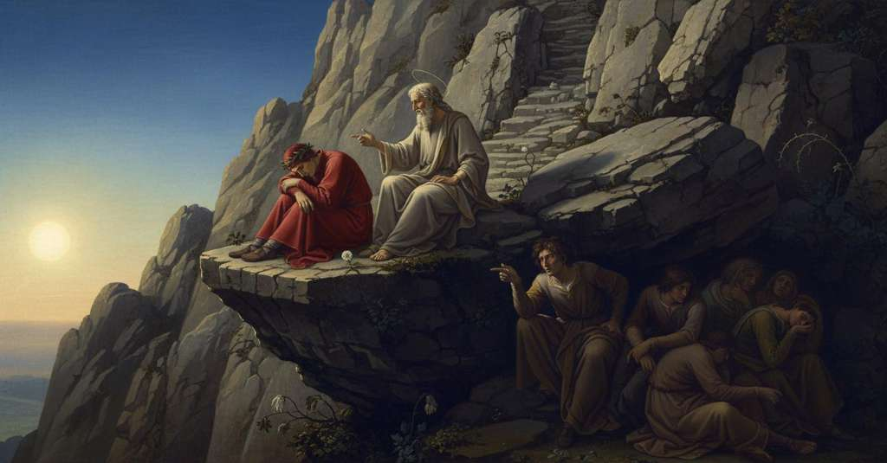

Purgatorio — Canto 4

Dopo la faticosa ascesa alla prima balza dell'Antipurgatorio, Dante riceve da Virgilio una lezione di astronomia e poi incontra l'amico Belacqua tra i negligenti, che gli spiega la legge della loro attesa. After the arduous ascent to the first terrace of Ante-Purgatory, Dante receives an astronomy lesson from Virgil and then meets his friend Belacqua among the negligent, who explains the law of their waiting. 煉獄前域の最初の岩棚への困難な登攀の後、ダンテはウェルギリウスから天文学の講義を受け、怠慢な魂の中にいる友人ベラックァに出会い、彼らの待機の定めについて説明を聞く。
1
Quando per dilettanze o ver per doglie,
When through delights or else through pains,
喜びによってであれ、あるいは苦しみによってであれ、
2
che alcuna virtù nostra comprenda,
that any of our faculties may seize,
我々のいずれかの能力がそれを捉えるとき、
3
l’anima bene ad essa si raccoglie,
the soul gathers itself wholly to that one,
魂はそれにすっかりと集中し、
4
par ch’a nulla potenza più intenda;
it seems to heed no other of its powers;
他のどの力にも注意を払わぬように見える。
5
e questo è contra quello error che crede
and this is counter to that error which believes
そしてこれは、信じるあの誤謬に反している、
6
ch’un’anima sovr’ altra in noi s’accenda.
that one soul above another is lit within us.
すなわち、我々の内に一つの魂の上にもう一つの魂が灯ると。
7
E però, quando s’ode cosa o vede
And therefore, when one hears or sees a thing
それゆえ、何かを聞いたり見たりして
8
che tegna forte a sé l’anima volta,
that holds the soul turned strongly toward it,
魂がそれに強く向き、囚われているとき、
9
vassene ’l tempo e l’uom non se n’avvede;
time passes by and the man does not perceive it;
時は過ぎ去り、人はそれに気づかない。
10
ch’altra potenza è quella che l’ascolta,
for one faculty is that which takes the note,
というのも、傾聴する力は一つの能力であり、
11
e altra è quella c’ha l’anima intera:
and another is that which has the entire soul:
魂全体を擁する力はまた別の能力であるからだ。
12
questa è quasi legata e quella è sciolta.
the latter is as if bound, and the former is free.
後者はそれに縛られ、他の力は自由なままだ。
13
Di ciò ebb’ io esperïenza vera,
Of this I had a true experience,
このことを私は、実に経験したのだ、
14
udendo quello spirto e ammirando;
hearing that spirit and marveling;
かの霊に聞き入り、感嘆している間に。
15
ché ben cinquanta gradi salito era
for the sun had climbed a good fifty degrees,
なぜなら、実に五十度も昇っていたのだ
16
lo sole, e io non m’era accorto, quando
and I had not noticed it, when
太陽は、そして私は気づかなかった、その時まで
17
venimmo ove quell’ anime ad una
we came to where those souls with one voice
我々がかの魂たちが一斉に
18
gridaro a noi: «Qui è vostro dimando».
cried out to us: 'Here is what you ask for.'
我らに向かい叫んだ場所に来たのだ。「あなたがたがお求めのものはここにあります」。
19
Maggiore aperta molte volte impruna
A wider opening many a time hedges up
しばしば農夫が茨で塞ぐ、より大きな裂け目、
20
con una forcatella di sue spine
with a small forkful of his thorns
その棘のフォーク一把をもって
21
l’uom de la villa quando l’uva imbruna,
the peasant, when the grape grows dark,
葡萄が色づく頃に、
22
che non era la calla onde salìne
than was the path by which my leader climbed,
それよりも狭かったのだ、我らが登った小道は
23
lo duca mio, e io appresso, soli,
and I behind him, we two alone,
我が師と、そして後に続く私、ただ二人、
24
come da noi la schiera si partìne.
after the company had parted from us.
かの魂の群れが我々から離れた後。
25
Vassi in Sanleo e discendesi in Noli,
One goes to San Leo and descends to Noli,
サンレオへは登り、ノーリへは下りてゆく、
26
montasi su in Bismantova e ’n Cacume
one climbs Bismantova and Cacume
ビズマントヴァやカクーメの頂にも登る
27
con esso i piè; ma qui convien ch’om voli;
with only feet; but here a man must fly;
自らの足で。しかしここでは、人は飛ばねばならぬ。
28
dico con l’ale snelle e con le piume
I mean with the swift wings and with the plumes
すなわち、俊敏な翼と羽をもって、と言うのだ
29
del gran disio, di retro a quel condotto
of great desire, behind that guide
大いなる望みの。かの導き手の後ろから、
30
che speranza mi dava e facea lume.
who gave me hope and was a light to me.
その人は私に希望を与え、光を灯していた。
31
Noi salavam per entro ’l sasso rotto,
We were climbing up within the broken rock,
我々は砕かれた岩の間を登っていった、
32
e d’ogne lato ne stringea lo stremo,
and the edge pressed us on either side,
そして両側から狭間が我らを締め付け、
33
e piedi e man volea il suol di sotto.
and the ground beneath required feet and hands.
下方の地面は足と手を求めた。
34
Poi che noi fummo in su l’orlo suppremo
When we were on the topmost edge
我らが高き岸の
35
de l’alta ripa, a la scoperta piaggia,
of the high bank, on the open slope,
至高の縁、開けた斜面の上に出でし時、
36
«Maestro mio», diss’ io, «che via faremo?».
“My Master,” I said, “what way shall we take?”.
「師よ」と我は言えり、「我らいかなる道を行くべきか？」。
37
Ed elli a me: «Nessun tuo passo caggia;
And he to me: “Let none of your steps fall back;
彼は我に、「そなたの一歩も踏み外すことなかれ。
38
pur su al monte dietro a me acquista,
just gain ground up the mountain behind me,
ただ我が後に続きて山を登りゆき、
39
fin che n’appaia alcuna scorta saggia».
until some wise guide appears to us.”
賢き案内人が我らに現れるまで」。
40
Lo sommo er’ alto che vincea la vista,
The summit was so high it overcame the sight,
頂は高く、視力を超え、
41
e la costa superba più assai
and the slope far prouder
そしてその斜面は遥かに険しかりき、
42
che da mezzo quadrante a centro lista.
than the line from mid-quadrant to the center.
四分円の中点から中心への線よりも。
43
Io era lasso, quando cominciai:
I was weary, when I began:
我は疲れ果て、かく語り始めき、
44
«O dolce padre, volgiti, e rimira
“O sweet father, turn, and see
「ああ優しき父よ、振り向き、見給え、
45
com’ io rimango sol, se non restai».
how I am left alone, if you do not stop.”
もし汝が留まらねば、我がいかに一人残されるかを」。
46
«Figliuol mio», disse, «infin quivi ti tira»,
“My son,” he said, “drag yourself up to here,”
「我が子よ」と彼は言い、「ここまで這い登るのだ」、
47
additandomi un balzo poco in sùe
pointing out to me a ledge a little above
我に少し上の岩棚を指し示しつつ、
48
che da quel lato il poggio tutto gira.
that on that side encircles the whole hill.
それはその側から丘をすっかり巡りおる。
49
Sì mi spronaron le parole sue,
His words so spurred me on,
その言葉に我はかくも奮い立たされ、
50
ch’i’ mi sforzai carpando appresso lui,
that I forced myself, scrambling after him,
彼の後に続きて這い登るべく力を尽くし、
51
tanto che ’l cinghio sotto i piè mi fue.
so that the terrace was beneath my feet.
ついにその岩棚が我が足の下に来るまで。
52
A seder ci ponemmo ivi ambedui
We both sat down there
そこに我ら二人は腰を下ろし、
53
vòlti a levante ond’ eravam saliti,
turned to the east from where we had climbed,
我らが登り来たりし東の方を向きぬ、
54
che suole a riguardar giovare altrui.
which is wont to comfort one who looks back.
かく振り返るは人の心を慰むる常なれば。
55
Li occhi prima drizzai ai bassi liti;
I first directed my eyes to the low shores;
我はまず眼を低き岸辺に向け、
56
poscia li alzai al sole, e ammirava
then raised them to the sun, and was amazed
次に太陽へと上げ、そして驚きぬ、
57
che da sinistra n’eravam feriti.
that we were being struck by it from the left.
我らが左からその光に射られていたことに。
58
Ben s’avvide il poeta ch’ïo stava
The poet well perceived that I stood
詩人は私が立っているのをよく見て取った、
59
stupido tutto al carro de la luce,
all amazed at the chariot of light,
光の戦車にすっかり呆然と、
60
ove tra noi e Aquilone intrava.
where between us and the North it entered.
それは我々と北との間に入り込んでいた。
61
Ond’ elli a me: «Se Castore e Poluce
Whence he to me: “If Castor and Pollux
そこで彼は私に言った、「もしカストルとポルックスが
62
fossero in compagnia di quello specchio
were in the company of that mirror
あの鏡のお供をしていたならば
63
che sù e giù del suo lume conduce,
which leads its light upward and down,
それはその光を上や下に導くのだが、
64
tu vedresti il Zodïaco rubecchio
you would see the reddish Zodiac
お前は赤みを帯びた黄道帯が
65
ancora a l’Orse più stretto rotare,
still rotate more closely to the Bears,
さらに熊たちに近く回るのを見るだろう、
66
se non uscisse fuor del cammin vecchio.
if it did not go out of its old path.
もしそれが古い道筋から外れなければ。
67
Come ciò sia, se ’l vuoi poter pensare,
How this may be, if you wish to be able to think it,
これがどうしてか、もしそれを考えたいのなら、
68
dentro raccolto, imagina Sïòn
with mind collected, imagine Zion
内に精神を集中し、シオンを想像せよ
69
con questo monte in su la terra stare
with this mountain to be on the earth
この山と共に地の上に立っていると。
70
sì, ch’amendue hanno un solo orizzòn
so that both have a single horizon
すなわち、両者は一つの地平線を持ち
71
e diversi emisperi; onde la strada
and different hemispheres; whence the road
そして異なる半球を持つ。ゆえに道は
72
che mal non seppe carreggiar Fetòn,
that Phaethon knew not how to drive well,
パエトンがうまく駆れなかった道だが、
73
vedrai come a costui convien che vada
you will see how it must of necessity go for this one
お前は見るだろう、それがこちらにはどのように進まねばならぬか
74
da l’un, quando a colui da l’altro fianco,
on one side, when for that one on the other side,
一方から、あちらにはもう一方の側から進む時に、
75
se lo ’ntelletto tuo ben chiaro bada».
if your intellect pays clear attention.”
もしお前の知性がはっきりと注意を払うならば」。
76
«Certo, maestro mio,» diss’ io, «unquanco
“Truly, my master,” I said, “never
「確かに、我が師よ」と私は言った、「かつて一度も
77
non vid’ io chiaro sì com’ io discerno
did I see so clearly as I now discern
私はこれほど明確に見たことはありません、私が今見分けるように
78
là dove mio ingegno parea manco,
there where my intellect seemed to lack,
私の知性が足りないと思われたあの点について、
79
che ’l mezzo cerchio del moto superno,
that the middle circle of the supernal motion,
すなわち、天の動きの真ん中の円は、
80
che si chiama Equatore in alcun’ arte,
which is called the Equator in some art,
ある学問では赤道と呼ばれ、
81
e che sempre riman tra ’l sole e ’l verno,
and which always remains between the sun and the winter,
そして常に太陽と冬との間に留まるそれは、
82
per la ragion che di’, quinci si parte
for the reason you say, from here departs
あなたの言う理由によって、ここから離れてゆく
83
verso settentrïon, quanto li Ebrei
toward the north, as much as the Hebrews
北の方へと、ヘブライ人たちが
84
vedevan lui verso la calda parte.
saw it toward the hot part.
それを見ていたのと同じだけ、熱い方角へと。
85
Ma se a te piace, volontier saprei
But if it pleases you, I would gladly know
しかし、もしよろしければ、喜んで知りたいのです
86
quanto avemo ad andar; ché ’l poggio sale
how far we have to go; for the hill rises
我々がどれだけ行かねばならぬかを。この丘は登っており
87
più che salir non posson li occhi miei».
more than my eyes are able to climb.”
私の両目が登ることのできる以上に高く」。
88
Ed elli a me: «Questa montagna è tale,
And he to me: “This mountain is such,
そして彼は私に言った、「この山はこのようなものだ、
89
che sempre al cominciar di sotto è grave;
that always at the beginning from below it is hard;
下から登り始めるときは常に辛く、
90
e quant’ om più va sù, e men fa male.
and the more one goes up, the less it hurts.
そして人が高く登るほど、より楽になるのだ。
91
Però, quand’ ella ti parrà soave
Therefore, when it will seem to you so gentle
それゆえ、それがお前にとって穏やかに思われる時
92
tanto, che sù andar ti fia leggero
so much, that going up will be as light for you
あまりに、上へ行くことがお前にとって軽くなるほど
93
com’ a seconda giù andar per nave,
as going down with the current in a ship,
船で流れに乗って下るように、
94
allor sarai al fin d’esto sentiero;
then you will be at the end of this path;
その時、お前はこの小道の終わりにいるだろう。
95
quivi di riposar l’affanno aspetta.
there expect to rest from your exhaustion.
そこで疲れを休めることを期待せよ。
96
Più non rispondo, e questo so per vero».
I answer no more, and this I know for true.”
これ以上は答えぬ、そしてこれを私は真実と知っている」。
97
E com’ elli ebbe sua parola detta,
And as he had said his word,
そして彼がその言葉を言い終えると、
98
una voce di presso sonò: «Forse
a voice nearby sounded: “Perhaps
近くから声が響いた、「おそらくは
99
che di sedere in pria avrai distretta!».
that to sit first you will have need!”
まず座る必要がおありでしょうな！」と。
100
Al suon di lei ciascun di noi si torse,
At its sound each of us turned,
その音に我々はおのおの身をひねり、
101
e vedemmo a mancina un gran petrone,
and we saw on the left a great boulder,
左手に大きな岩塊を見た、
102
del qual né io né ei prima s’accorse.
which neither I nor he had noticed before.
私にも彼にもそれまで気づかなかったものだ。
103
Là ci traemmo; e ivi eran persone
There we drew ourselves; and there were people
そこへ我々は向かった。そしてそこには人々がいた、
104
che si stavano a l’ombra dietro al sasso
who were staying in the shade behind the stone
岩の陰でうずくまっていた、
105
come l’uom per negghienza a star si pone.
as a man through negligence positions himself to stay.
怠惰ゆえに人が身を置くように。
106
E un di lor, che mi sembiava lasso,
And one of them, who seemed weary to me,
そしてその内の一人、私には疲れきって見えた者は、
107
sedeva e abbracciava le ginocchia,
was sitting and embracing his knees,
座って両膝を抱え、
108
tenendo ’l viso giù tra esse basso.
holding his face down low between them.
顔をその間に低くうずめていた。
109
«O dolce segnor mio», diss’ io, «adocchia
“O my sweet lord,” I said, “behold
「おお、我が優しき主よ」と私は言った、「ご覧ください
110
colui che mostra sé più negligente
him who shows himself more negligent
あの者、自らをより怠惰に見せている者を、
111
che se pigrizia fosse sua serocchia».
than if laziness were his sister.”
まるで怠惰が彼の姉妹であるかのように」。
112
Allor si volse a noi e puose mente,
Then he turned to us and paid mind,
すると彼は我々の方を向き、注意を払い、
113
movendo ’l viso pur su per la coscia,
moving his face just up along his thigh,
顔をただ腿に沿って動かしながら、
114
e disse: «Or va tu sù, che se’ valente!».
and said: “Now you go on up, you who are so valiant!”
そして言った、「さあ、上へ行け、お前は有能なのだから！」と。
115
Conobbi allor chi era, e quella angoscia
I recognized then who he was, and that anguish
私はその時、彼が誰であるかを知った。そしてあの疲労は
116
che m’avacciava un poco ancor la lena,
that still quickened my breath a little,
なおも私の息を少しばかり急かせていたが、
117
non m’impedì l’andare a lui; e poscia
did not stop me from going to him; and after
私が彼の許へ行くのを妨げはしなかった。そして
118
ch’a lui fu’ giunto, alzò la testa a pena,
I had reached him, he barely raised his head,
私が彼のもとに着くと、彼はかろうじて頭を上げ、
119
dicendo: «Hai ben veduto come ’l sole
saying: “Have you clearly seen how the sun
言った、「お前はよく分かったのか、いかに太陽が
120
da l’omero sinistro il carro mena?».
from the left shoulder drives its chariot?”
左肩の方からその車を駆っているかを？」。
121
Li atti suoi pigri e le corte parole
His lazy acts and his short words
彼の怠惰な仕草と短い言葉は
122
mosser le labbra mie un poco a riso;
moved my lips a little to a smile;
私の唇にわずかな笑みを浮かばせた。
123
poi cominciai: «Belacqua, a me non dole
then I began: “Belacqua, for you I no longer
それから私は始めた、「ベラックァよ、私はもはや
124
di te omai; ma dimmi: perché assiso
grieve now; but tell me: why are you seated
君のことを嘆きはしない。だが教えてくれ、なぜ腰を下ろし
125
quiritto se’? attendi tu iscorta,
right here? are you waiting for an escort,
ここにいるのだ？ 案内人を待っているのか、
126
o pur lo modo usato t’ha’ ripriso?».
or has your usual manner re-taken you?”
それともいつもの癖がまた出たのか？」。
127
Ed elli: «O frate, andar in sù che porta?
And he: “O brother, what is the use of going up?
すると彼は言った、「おお、兄弟よ、上へ行って何になる？
128
ché non mi lascerebbe ire a’ martìri
for the angel of God who sits at the gate
というのも、門の許に座す神の御使いが
129
l’angel di Dio che siede in su la porta.
would not let me go to the torments.
私を苦行の場へ行かせてはくれぬからな。
130
Prima convien che tanto il ciel m’aggiri
First it is required that the heavens circle me
まず、天が私の周りを巡らねばならぬ、
131
di fuor da essa, quanto fece in vita,
outside it, for as long as they did in life,
その外で、私が生きていたのと同じだけの時を、
132
per ch’io ’ndugiai al fine i buon sospiri,
because I delayed my good sighs to the end,
というのも私は、最後の時まで善き溜息を遅らせたのだから、
133
se orazïone in prima non m’aita
unless a prayer first helps me
もし祈りがまず私を助けてくれぬならば、
134
che surga sù di cuor che in grazia viva;
that rises up from a heart that lives in grace;
恩寵のうちに生きる心から立ち上る祈りが。
135
l’altra che val, che ’n ciel non è udita?».
what is the other worth, which is not heard in heaven?”
他の祈りに何の値打ちがある、天に聞き届けられぬものに？」。
136
E già il poeta innanzi mi saliva,
And already the poet was climbing before me,
そしてすでに詩人は私の前を登っており、
137
e dicea: «Vienne omai; vedi ch’è tocco
and said: “Come now; see that the meridian is touched
言っていた、「さあ、来なさい。見よ、子午線が太陽に触れられ、
138
meridïan dal sole e a la riva
by the sun and on the shore
岸辺では
139
cuopre la notte già col piè Morrocco».
night already covers Morocco with its foot.”
夜がすでにその足でモロッコを覆っている」。